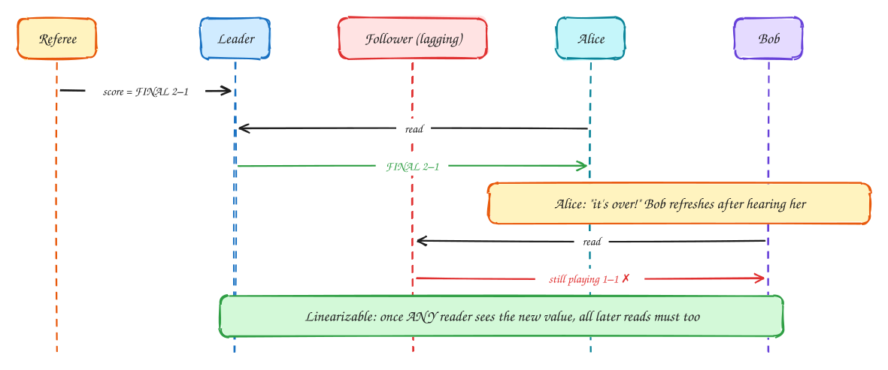
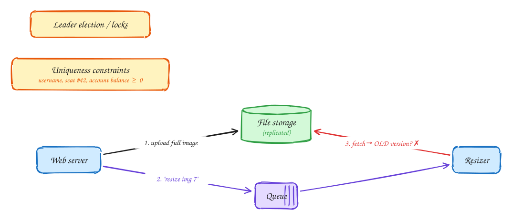
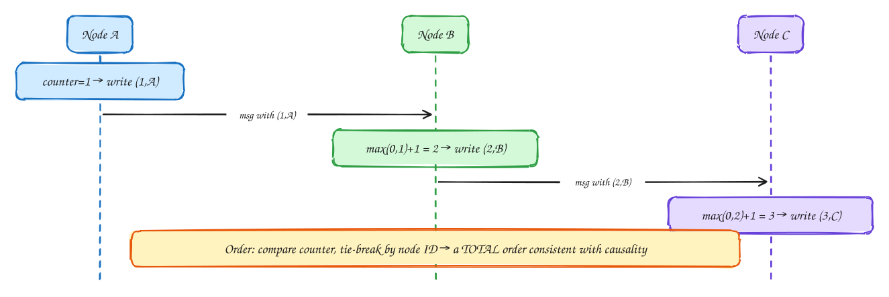
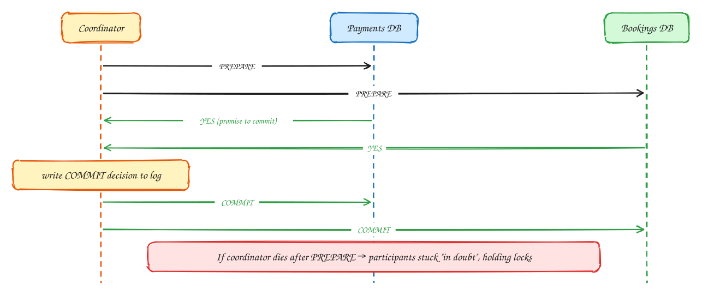
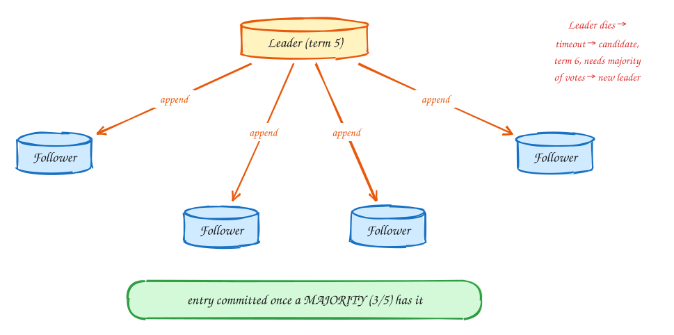
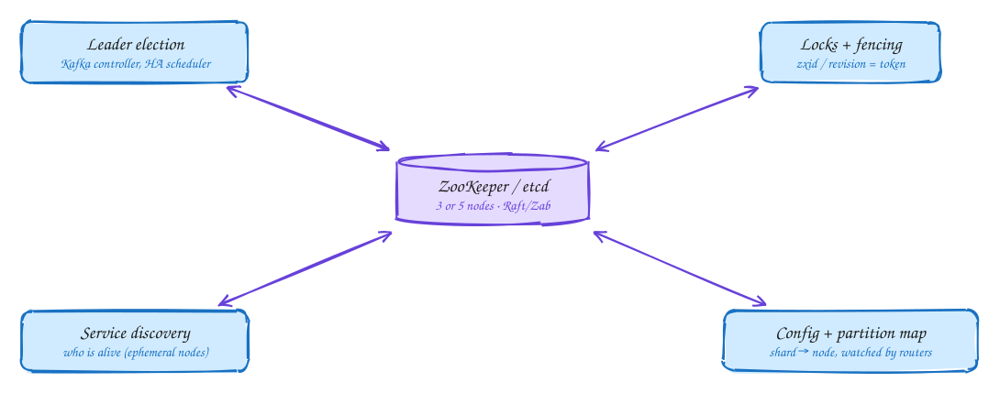

DDIA Chapter 9: Consistency & Consensus¶
Advanced
These DDIA pages are study notes in our own words and diagrams, connecting the book to interview problems. They don't replace the book; Designing Data-Intensive Applications by Martin Kleppmann is worth reading in full.
Tip
One-page sketchnote: DDIA 9 · CONSISTENCY & CONSENSUS on a single page, for revision or printing.

TL;DR¶
Given everything in Ch 8, how do nodes agree? This chapter covers linearizability (behave like one copy), ordering and causality, distributed transactions (2PC), and consensus (Raft, Paxos, ZooKeeper), the tools behind leader election, locks, and uniqueness.
Key ideas: linearizability · CAP · causality · Lamport clocks · total order broadcast · 2PC · Raft · ZooKeeper
Linearizability: behave as if there is one copy¶
Strongest single-object guarantee
Chapter 8 showed how networks, clocks and pauses make distributed systems unreliable. This chapter asks: given all that, how can several machines agree on anything? It starts with the strongest promise a replicated system can make: that it behaves as if there were only one copy of the data.

- The referee records the final score of a match, 2–1, on the leader database.
- Alice refreshes her phone. Her read goes to the leader, she sees FINAL 2–1, and she shouts "it's over!"
- Bob, sitting next to her, hears her and refreshes after she did. His read goes to a follower that is a few seconds behind, and he sees 1–1, still playing. Bob read later in real time but got an older answer.
- Linearizability forbids exactly this. Once any reader has seen the new value, every later read, by anyone, must see it too (or something newer). The system must look like a single copy where each operation takes effect at one instant. Both readers did nothing wrong; the system broke the promise.
Warning
Not the same as serializability, despite the similar name. Serializable (Chapter 7) is about transactions touching many objects: they behave as if run one at a time. Linearizable is about one object: reads always reflect the latest write in real time. A database can be one without the other; "strict serializability" means both.
When you actually need linearizability¶
Use cases
Linearizability is expensive: every read and write has to coordinate with other nodes. Most features don't need it. Here's where you do:

- Locks and leader election: if two nodes can both believe they hold the lock, it isn't a lock. Every node must see the same, latest answer to "who holds it?".
- Uniqueness and limits: "this username is taken", "seat 42 is sold", "the balance can't go below zero". When two people race for the last one, everyone must agree on who got there first.
- Two channels racing each other: a web server saves an uploaded image to storage (1), then puts "resize image 7" on a queue (2). The queue message can arrive faster than the storage replication. The resizer fetches image 7 from a lagging storage replica and resizes the old version (3). Fixes: make that storage read linearizable (read from the leader), or put the version number in the message so the resizer can tell it got the wrong one and retry.
Note
Everything else: feeds, likes, view counts and search results are fine with eventual consistency: slightly stale for a few seconds. Saying explicitly which parts of your design need linearizability and which don't is a strong staff-level signal.
Which systems are linearizable, and CAP done right¶
CAP · PACELC
Whether a replicated database can be linearizable depends on how it replicates (see Chapter 5):
| Replication | Linearizable? | Why |
|---|---|---|
| Single-leader (reads from leader) | Potentially yes | If reads hit the leader and the leader is really the leader (fencing) |
| Consensus (Raft / ZooKeeper / etcd) | Yes | Designed for it |
| Multi-leader | No | Concurrent writes on different leaders |
| Leaderless (Dynamo / Cassandra) | Probably not | LWW + clock skew, sloppy quorums, timing edge cases |
This is also where the famous CAP theorem fits. It is often stated as "pick 2 of 3", which is misleading. The accurate version is narrower:
Note
CAP, correctly stated: network partitions will happen; you don't get to opt out of them. While one is happening, a node cut off from the others has two choices: refuse requests it can't safely answer, staying consistent (CP), or answer from data that might be stale, staying available (AP). It's a decision per feature, not per database.
Note
PACELC adds the everyday case: Else, when there's no partition, you still trade Latency against Consistency. Linearizability is slow even when nothing is failing, because each operation waits for other nodes (a quorum round trip, possibly across regions).
Tip
Say this in the interview: "Inventory and payments are CP: I'd rather reject than oversell. Hotel search and reviews are AP: stale by a few seconds is fine."
Ordering: Lamport timestamps¶
Causality without clocks
Chapter 8 showed that wall clocks can't order events across machines. But we often need to know that one thing caused another: a reply must come after the message it answers. Lamport timestamps give an ordering that respects cause and effect, using only counters.

- Every node keeps a simple counter, starting at 0. Each time it does something, it increments the counter and stamps the operation with (counter, node ID). Node A writes something and stamps it (1, A).
- Every message carries the sender's counter. When a node receives one, it sets its counter to max(its own, the received one) + 1. Node B receives A's message (counter 1), so its next write is (2, B). Node C hears from B and stamps (3, C). The counter travels along the chain of cause and effect.
- The result: if event X could have influenced event Y, X's timestamp is always smaller. To get one complete order, compare counters and break ties by node ID.
- The limitation: you only know the order after the fact, once you've collected everyone's timestamps. Suppose two users register the same username at the same moment on different nodes. To answer "is it taken?" right now, a node needs to know nobody else is claiming it concurrently. Lamport timestamps can't tell you that. You need every node to process requests in the same order as they happen, and that requires total order broadcast, which turns out to be equivalent to consensus.
Note
Total order broadcast: deliver every message to every node, reliably, in the same order. That is exactly a replicated log: Kafka partitions (within one partition), Raft's log, ZooKeeper's Zab protocol. If every node applies the same log in the same order, they all end up in the same state.
Two-phase commit (2PC)¶
Distributed atomic commit
Sometimes one transaction has to change data in two different databases, say the payments database and the bookings database, and both changes must happen or neither. Each database can only promise atomicity for itself, so a coordinator runs a protocol across them: two-phase commit.

- Phase 1, prepare: the coordinator asks every participant, "can you commit this?"
- Each participant checks it can (constraints pass, data written durably to disk) and replies YES. A YES is a binding promise: the participant must be able to commit later, even if it crashes and restarts in between. So it keeps the affected rows locked while it waits.
- Phase 2, commit: once all participants have said YES, the coordinator writes its decision, "COMMIT", to its own log. That is the point of no return. Then it tells every participant to commit. If anyone said NO, it tells everyone to abort.
- The weakness: if the coordinator dies after the prepare phase, the participants are stuck "in doubt". They promised to commit, so they can't abort on their own, and they don't know the decision, so they can't commit. They wait, holding their locks, until the coordinator recovers. Other transactions touching those rows stall too. That blocking, plus tight coupling between services, is why microservice architectures use sagas instead: a sequence of local transactions, each with a compensating action to undo it if a later step fails.
Tip
Say this in the interview: "I won't use 2PC across the payment and booking services. I'll use a saga: reserve room → charge → confirm, with compensations (release room, refund), driven by events with the outbox pattern."
Consensus: Raft in one picture¶
Raft / Paxos / Zab
Consensus means getting several nodes to agree on a value, such as "who is the leader" or "what is the next entry in the log", in a way that survives crashes and network problems. Raft is the most widely taught algorithm. The idea:

- A cluster of 5 nodes elects one leader for each term (a numbered epoch: term 5, term 6…). The others are followers. Five nodes can tolerate 2 failures.
- Every change goes to the leader, which appends it to its log and sends it to the followers.
- An entry is committed as soon as a majority (3 of 5) have stored it. Why does that make it safe? Any future majority of 3 must include at least one node from this majority, because two groups of 3 out of 5 always overlap. So a committed entry can never be forgotten, whoever becomes leader next.
- If the leader dies or goes silent, a follower's timer runs out. It becomes a candidate, increments the term to 6, and asks for votes. With votes from a majority it becomes the new leader. If the old leader comes back, it sees the higher term and steps down, and any message it sends with the old term is rejected. That is the same fencing idea as in Chapter 8.
Note
Sizing: 2f + 1 nodes tolerate f failures: 3 nodes survive 1 failure, 5 nodes survive 2. Every write waits for a majority round trip, so consensus is used for small, critical metadata (who's leader, which node owns which shard), not for bulk data.
ZooKeeper / etcd: consensus as a service¶
Coordination services
Consensus algorithms are hard to implement correctly, so in practice you don't. You run a small cluster of ZooKeeper or etcd, which implements it for you and exposes a simple, strongly consistent key-value store. Your services use it for a handful of coordination jobs:

- It's a small store (keys with small values, a few nodes), where every read and write is linearizable.
- Leader election: many scheduler instances try to create the same key, and exactly one succeeds. That one is active; the rest wait as standbys. Distributed locks work the same way, and the store's ever-increasing revision number is a ready-made fencing token (Chapter 8).
- Membership: each live server registers an ephemeral key that disappears automatically when its session dies, so "which servers are alive?" is just a list. Configuration and shard maps live here too, and clients watch keys to be notified the moment they change (the routing in Chapter 6).
Tip
Say this in the interview: "The job scheduler runs active-passive. Leader election goes through etcd with a lease, and the lease revision is the fencing token on job-claim writes."
In the interview¶
Important
Interviewer asks: "Is this CP or AP?"
→ Answer per feature: booking and payment are CP, search and feeds are AP. Mention PACELC latency cost.
Important
Interviewer asks: "Transaction spanning booking + payment services?"
→ Not 2PC (blocking, coupling). Use a saga + outbox + idempotent consumers.
Important
Interviewer asks: "Exactly one scheduler must run."
→ Leader election via ZooKeeper or etcd (consensus), lease + fencing token.
Important
Interviewer asks: "Unique usernames across regions?"
→ Needs linearizable compare-and-set: one strongly consistent store (Spanner, CockroachDB, or a single-leader region for usernames).
← Ch 8: Trouble with distributed systems · Ch 10: Batch processing →